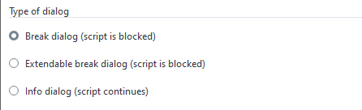
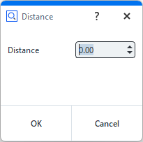
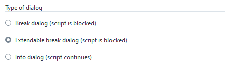
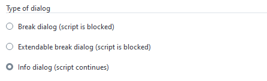
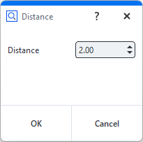
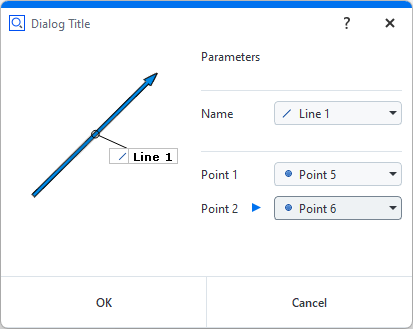
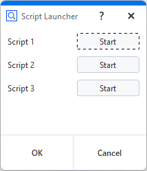
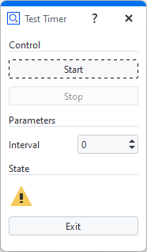

Executing dialogs
Dialog commands
Break dialog (execute)

Standard case of a dialog.
The dialog is created and executed with a single command.
The command blocks the script until the dialog is closed again.
The dialog result is returned.

RESULT=gom.script.sys.execute_user_defined_dialog (dialog={
"content": [
[
{
"columns": 1,
"name": "label",
"rows": 1,
"text": {
"id": "",
"text": "Distance",
"translatable": True
},
"tooltip": {
"id": "",
"text": "",
"translatable": True
},
"type": "label",
"word_wrap": False
},
{
"background_style": "",
"columns": 1,
"maximum": 1000,
"minimum": 0,
"name": "inputDistance",
"precision": 2,
"rows": 1,
"tooltip": {
"id": "",
"text": "",
"translatable": True
},
"type": "input::number",
"unit": "",
"value": 0
}
]
],
"control": {
"id": "OkCancel"
},
"embedding": "always_toplevel",
"position": "automatic",
"size": {
"height": 112,
"width": 198
},
"sizemode": "automatic",
"style": "",
"title": {
"id": "",
"text": "Distance",
"translatable": True
}
})
or
RESULT=gom.script.sys.execute_user_defined_dialog (file='my_dialog.gdlg')
Extendable break dialog (create and show)

A dialog is created and executed by subsequent commands.
This way, the created dialog can be modified by the script right before execution.
# Create dialog, but do not execute it yet
DIALOG = gom.script.sys.create_user_defined_dialog (dialog=...)
#
# The dialog has been created. At this point of the script, the dialog handle DIALOG
# can be used to access and configure dialog parts
#
# Execute dialog and fetch execution result
RESULT = gom.script.sys.show_user_defined_dialog( dialog = DIALOG )
or
# Create dialog, but do not execute it yet
DIALOG = gom.script.sys.create_user_defined_dialog (file='my_dialog.gdlg')
# ...
Info dialog (create, open and close)

In this mode, the script execution continues after the dialog has been opened.
The sequence of commands is as follows:
the
createcommand creates a dialog. The dialog can be configured now. Afterwardsthe
opencommand is issued to display the dialog. The script executing continues. At lastthe
closecommand closes the dialog again, if no closed manually by the user yet.
Note
At script termination all open dialogs are closed automatically.
# Create dialog but do not execute it yet
DIALOG = gom.script.sys.create_user_defined_dialog (file='dialog.gdlg')
#
# The dialog has been created. At this point of the script, the dialog handle DIALOG
# can be used to access and configure dialog parts
#
# Show dialog. The script execution continues.
gom.script.sys.open_user_defined_dialog( dialog = DIALOG )
#
# The dialog content can be modified here, the dialog is still open
#
DIALOG.title = 'Stufe 2'
# Close dialog again
gom.script.sys.close_user_defined_dialog (dialog=DIALOG)
Dialog results
Note
The return value is an object with one property per interactive dialog widget containing its current value.
The return value is an object containing all current values.
Each dialog widget which can be changed by the script user writes its resulting value into this result object.
The key for each widget is its object name, which is unique.

#
# Print whole dialog result as an object. This is a result map with just one entry 'distance',
# named after the unique object name assigned to the spinbox (decimal widget).
#
print (RESULT) # Print whole result map
# output: gom.dialog.DialogResult ('distance': 2.0, 'label': None)
#
# Print result for the element named 'distance'. This will lead to the decimal widget content.
#
print (RESULT.distance)
# output: 2.0
#
# Print whole dialog result as a dictionary with the same content as above.
#
print (RESULT.__dict__)
# output: {'__args__': [{'distance': 2.0, 'label': None}], '__kwargs__': {}}
print (RESULT.__dict__['__args__'][0])
# output: {'distance': 2.0, 'label': None}

# Print content of the 'name' widget
print( RESULT.name )
# output: Line 1
# Print content of the widget named 'point1'. This can again be an element reference.
print( RESULT.point1 )
# output: gom.ActualReference (gom.app.project.inspection['Point 5'])
# Print content of the widget named 'point2'.
print( RESULT.point2 )
# output: gom.ActualReference (gom.app.project.inspection['Point 6'])
# construct a line with the user input. Therefore our dialog works similar to the 2-point line
# construction dialog
MCAD_ELEMENT=gom.script.primitive.create_line_by_2_points (
name= RESULT.name,
point1 = RESULT.point1,
point2 = RESULT.point2)
Note
The type of the result depends on the specific widget.
Custom results
You can return custom results from dialogs using an optional parameter to the close_user_defined_dialog-function. The following example produces ‘Yes’
and ‘No’ results for the different buttons and ‘Cheater’ when the user uses the close button of the dialog.
DIALOG = gom.script.sys.create_user_defined_dialog (file='dialog.gdlg')
#
# Event handler function called if anything happens inside of the dialog
#
def dialog_event_handler (widget):
if widget == DIALOG.button_yes:
gom.script.sys.close_user_defined_dialog( dialog = DIALOG, result = 'Yes' )
if widget == DIALOG.button_no:
gom.script.sys.close_user_defined_dialog( dialog = DIALOG, result = 'No' )
DIALOG.handler = dialog_event_handler
try:
RESULT = gom.script.sys.show_user_defined_dialog (dialog=DIALOG)
except gom.BreakError as e:
RESULT = 'Cheater'
print('RESULT', RESULT)
Please find the complete example here: dialog_yes_no.py
Configuring dialog widgets
Dialogs created with the
createandopencommands can be modified before executed.Each widget in the dialog can be accessed via the dialog handle.
The widget is identified by its unique name.
# Create dialog and receive dialog handle
DIALOG = gom.script.sys.create_user_defined_dialog (file='dialog.gdlg')
# The handle for a widget inside of the dialog is addressed by its unique name
WIDGET = DIALOG.distance
# The widget parameter can be set via widget attributes. 'Value', for instance, relates to the current widget value.
WIDGET.value = 3.0
All widgets share some common standard attributes:
Attribute |
Type |
Property |
|---|---|---|
name |
str |
Unique name of the widget - do not write! |
enabled |
bool |
Widget is currently active / inactive |
value |
(depends on widget) |
Current value |
For the type of the value property for a specific widget, see Dialog widgets. For widgets which are not used to enter some value, value is None and read-only. In addition, widgets have further attributes depending on their type (see Dialog widgets for details).
# Create dialog but do not execute it yet
DIALOG=gom.script.sys.create_dialog (file='dialog.gdlg')
# Set name to 'default name' and disable 'ok' button
DIALOG.name.value = "default name"
DIALOG.control.ok.enabled = False
# Execute dialog
RESULT=gom.script.sys.show_user_defined_dialog (dialog=DIALOG)
Event handler functions
Registering event handlers
A function can be registered to the dialog called on value changed.
Every time the user modified a dialog value, the handler function is called.
The handler function is also called on application global signals, e.g. when application data has been changed. In these cases is the string
'system'passed to the handler function. Those global signals are caused by changing the element selection or opening a project for example.The handler function can access dialog widget properties.
The handler function is registered using the special attribute
handler.New in ZEISS INSPECT 2026:
Each dialog widget can have a specific event handler. If the widget’shandlerproperty is empty or no valid function, the dialog event handler is called instead.The prev and next buttons of a wizard dialog are the only control widgets, which trigger the event handler.
DIALOG=gom.script.sys.create_user_defined_dialog (file='dialog.gdlg')
# Handler function registered to the dialog
def handler_function (widget):
# Print information about the modified widget
print ("Modified:", str (widget))
# If the 'name' widget is empty, the 'ok' button is disabled.
if DIALOG.name.value == "":
DIALOG.control.ok.enabled = False
else:
DIALOG.control.ok.enabled = True
if str(widget) == 'system':
print("It is a global event.")
elif str(widget) == 'initialize':
print("Dialog is displayed for the first time.")
# Register dialog handler
DIALOG.handler = handler_function
# Execute dialog
RESULT=gom.script.sys.show_user_defined_dialog (dialog=DIALOG)
A complete example with a handler function can be found in the file scriptingEditorExampleDialog.py. The argument passed to the event handler is either the dialog widget (e.g. a button) which triggered the event handler or a string. The following table lists all possible strings:
Value |
Description |
|---|---|
‘system’ |
Passed to the event handler in the case of a global event. |
‘timer’ |
Passed to the event handler in the case of a global event. |
‘initialize’ |
Passed to the event handler when the dialog is displayed for the first time. |
If the widget parameter is not a string, it represents a widget object. Note, that you cannot use the is operator on these objects. Always use == and similar
operators to compare the widget parameter:
def handler_function (widget):
...
# compare widget using "==", using "is" will not work!
if widget == DIALOG.textInput:
if DIALOG.textInput.value == "":
DIALOG.control.ok.enabled = False
else:
DIALOG.control.ok.enabled = True
Each dialog widget can have a specific event handler, which receives only events from the widget(s) it is assigned to. If the widget’s handler property is empty or no valid function, the dialog event handler is called instead.
Caution
The events ‘initialize’, ‘system’ and ‘timer’ are related to the entire dialog and therefore only passed to the dialog event handler!
# Register dialog event handler
DIALOG.handler = handler_function
# Register widget specific event handler for 'list' widget object
# -> All other widget's events are handled by
# the handler assigned to DIALOG.handler
DIALOG.list.handler = list_handler_function
Closing dialogs from within the event handler
Note
Dialogs can be closed from within event handlers.

def dialog_event_handler (widget):
if widget == DIALOG.button1:
execute_func_1 ()
gom.script.sys.close_user_defined_dialog (dialog=DIALOG)
elif widget == DIALOG.button2:
execute_func_2 ()
gom.script.sys.close_user_defined_dialog (dialog=DIALOG)
elif widget == DIALOG.button3:
execute_func_3 ()
gom.script.sys.close_user_defined_dialog (dialog=DIALOG)
Warning
Right after the dialog has been closed, its handle becomes invalid.
This implies, that the event handler function must be written in a way that no dialog dependent code is executed after the dialog has been closed.
Using a timer to activate the event handler
Each DIALOG has a special property named DIALOG.timer. This timer property can be used to trigger the event handler registered to DIALOG in
certain time intervals. When the event handler is triggered by the timer, the string timer is passed to it. The __doc__-string of the timer gives information
about its attributes:
print(DIALOG.timer.__doc__)
# output:
# Timer
#
# Attributes:
# enabled (boolean) - timer enabled
# interval (integer) - timer interval [ms]
Note
The timer is disabled by default.
Example:

DIALOG=gom.script.sys.create_user_defined_dialog (file='dialog.gdlg')
#
# Event handler function called if anything happens inside of the dialog
#
state = False
def dialog_event_handler (widget):
global state
if widget == DIALOG.start:
DIALOG.timer.interval = DIALOG.interval.value * 1000
DIALOG.timer.enabled = True
DIALOG.start.enabled = False
DIALOG.stop.enabled = True
elif widget == DIALOG.stop:
DIALOG.timer.enabled = False
DIALOG.start.enabled = True
DIALOG.stop.enabled = False
elif widget == DIALOG.interval:
DIALOG.timer.interval = DIALOG.interval.value * 1000
elif widget == DIALOG.exit:
gom.script.sys.close_user_defined_dialog (dialog=DIALOG)
elif str(widget) == 'system':
print("Its a system event.")
elif str(widget) == 'timer':
print("Its a timer event. Let´s swap the image.")
state = not state
if state:
DIALOG.image.system_image = 'system_message_warning'
else:
DIALOG.image.system_image = 'system_message_question'
DIALOG.handler = dialog_event_handler
DIALOG.stop.enabled = False
RESULT=gom.script.sys.show_user_defined_dialog (dialog=DIALOG)
The complete code of the example can be found here: timer.py.
Testing dialogs
See Testing Apps – Testing Apps with dialogs for implementing automated tests including dialog execution.